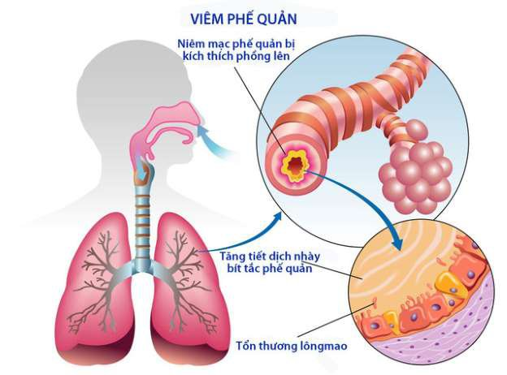
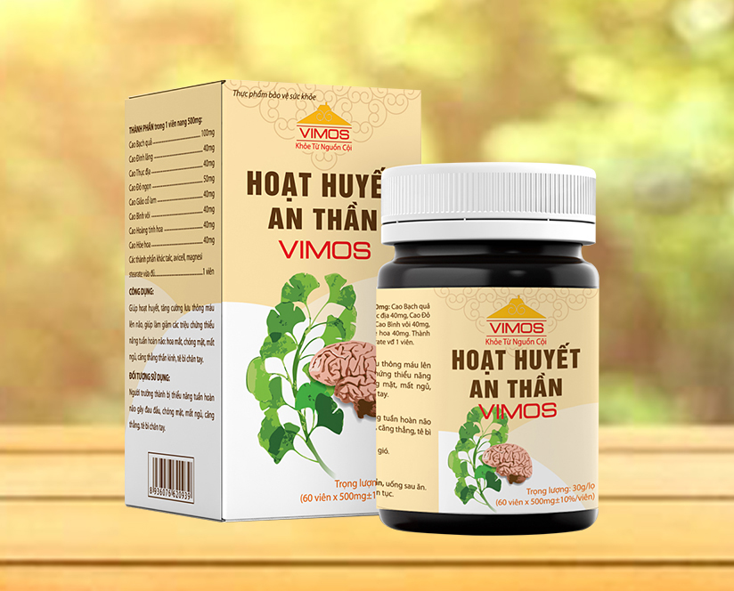
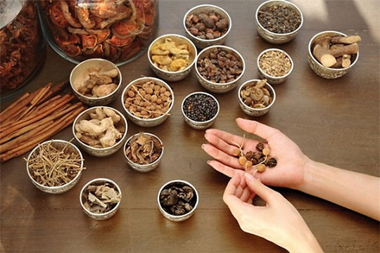
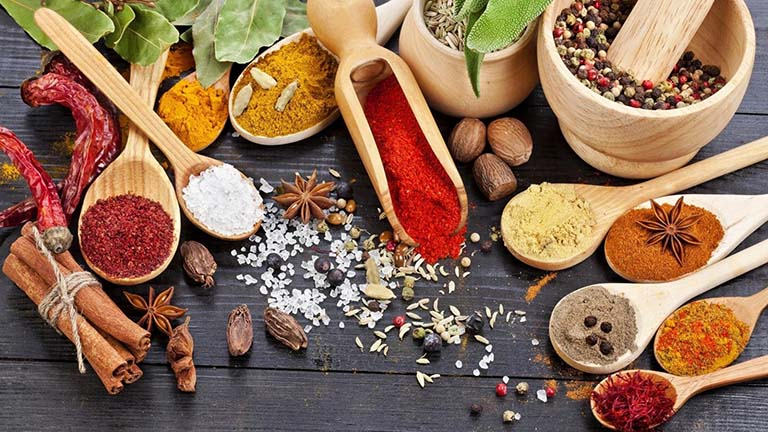
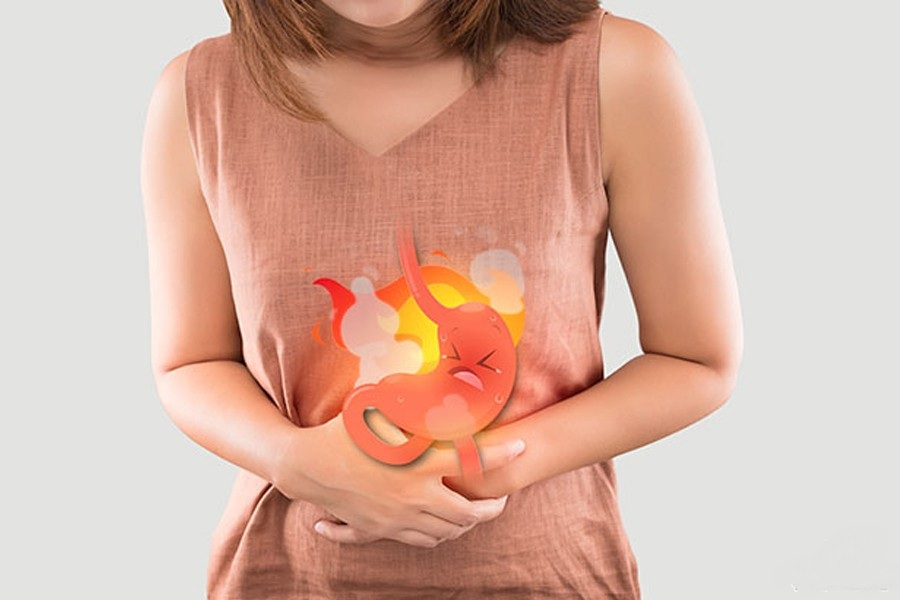

Hoàn tiền nếu sửa dụng không hiệu quả
Công ty TNHH thuoc dong y
thuocdongy@gmail.com
0987654321

Sản phẩm
các dấu hiệu bệnh đau dạ dày và biểu hiện để nhận biết
Dấu hiệu bệnh trào ngược dạ dày ở trẻ sơ sinh
Triệu chứng của bệnh viêm phế quản như thế nào?
Triệu chứng của bệnh GÚT ra sao
Hoạt huyết an thần Vimos điều trị thiếu máu não

Bệnh mất ngủ và cách phòng trị
Thoát bị đĩa đệm không còn là nỗi lo của bạn
Đau vai gáy theo y học cổ truyền và cách chữa bệnh
Hệ tiêu hóa là nơi dễ bị tổn thương, dễ dẫn đến ung thư, nguy cơ tử vong cao hơn rất nhiều so với bất kỳ cơ quan nào khác trong cơ thể. Dưới đây là 6 loại bệnh dạ dày thường gặp như...
Đau dạ dày nếu không được phát hiện, chữa trị đúng và kịp thời người bệnh có thể sẽ gặp nhiều biến chứng vô cùng nguy hiểm như thủng dạ dày, xuất huyết dạ dày, nguy hiểm nhất ung thư dạ dày ảnh hưởng tới tính mạng. Nếu bệnh được phát hiện sớm và chữa trị sẽ khỏi. Có rất nhiều phương pháp chữa trị khác nhau như sử dụng thuốc Tây Y, phương pháp y học cổ truyền. Tuy nhiên, nổi lên trong thời gian gần đây chữa bệnh đau dạ dày bằng Đông Y được nhiều người bệnh tin dùng, an toàn, không có tác dụng phụ, ảnh hưởng tới sức khỏe.
Khi lo lắng quá độ, tinh thần không thoải mái, tình chí bị tổn thương. Suy nghĩ tức giận quá độ kéo dài làm tổn thương đến Can, không sơ thông, hoành nghịch phạm Vị. Can uất hóa hỏa phạm Vị, làm tổn thương Vị âm gây ra miệng khô đắng. Đồng thời hỏa uất có thể làm tổn thương lạc mạch của Vị, nhiệt bức huyết vọng hành gây chảy máu.
Giúp hỗ trợ bổ tỳ vị và chỉ thống ở những người đang mang bệnh. Giảm nhanh ngay lập tức các cơn đau của bệnh viêm dạ dày cấp tính hay mãn tính và những cơn đau của bệnh viêm loét dạ dày. Ngăn ngừa tối đa của vi khuẩn Hp đồng thời giúp tiêu diệt các loại khuẩn nguy hại nhanh chóng. Phòng ngừa tình trạng đau dạ dày, trào ngược dạ dày, tình trạng ợ chua, ợ nóng, ợ hơi, chướng bụng, ăn không tiêu. Tăng cường chức năng hệ miễn dịch để ngăn ngừa tình trạng bệnh tái phát. Hỗ trợ tái tạo niêm mạc ổ viêm thành dạ dày và hỗ trợ làm liền nhanh các vết loét. Hỗ trợ hồi phục nhanh các thương tổn ở các ổ loét, ổ viêm đồ 7- 15 ngày đầu: Giảm 40% buồn nôn, đầy bụng, ợ hơi, ợ chua, đau bụng. 15-30 ngày tiếp theo: không còn đầy bụng, khó tiêu, triệu chứng đau bụng giảm 87%. 2- 3 tháng: lành lớp niêm mạc dạ dày, bệnh ở trạng thái ổn định thời gian lâu dài, không tái phát. Dạ dày Việt Thanh chia sẻ một một số thông tin hữu ích với mong muốn giúp bạn hiểu đúng hơn về chữa dạ dày bằng Đông Y. Hy vọng những gì chúng tôi chia sẻ sẽ giúp bạn có thêm một phương pháp an toàn, hiệu quả, trong việc chữa trị căn bệnh này "Dạ dày khỏe, cuộc sống vui, công việc suôn sẻ và gia đình hạnh phúc".
Hướng dẫn đặt hàng
Hướng dẫn thanh toán
Trung tâm bảo hành
Chính sách bảo hành
Câu hỏi thường gặp
Kiểm tra đơn đặt hàng
Chính sách bảo mật thông tin
Đại học Đại Nam, số 1 phố Sốm
Phú Lãm, Hà Đông, Hà Nội
0123456789
thuocdongy@gmail.com

Copyright © Dũng provjp